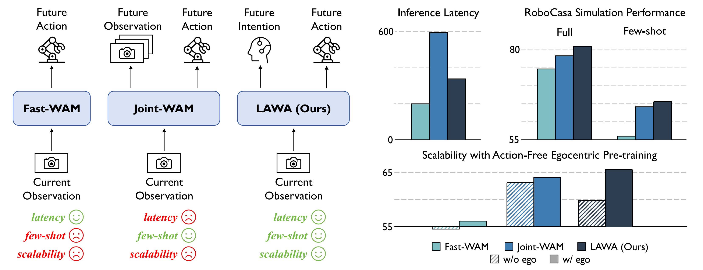
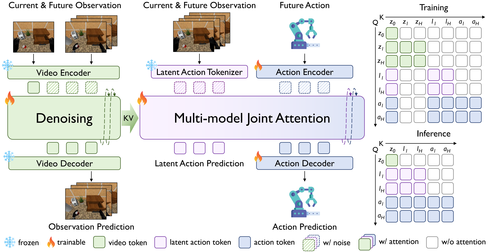
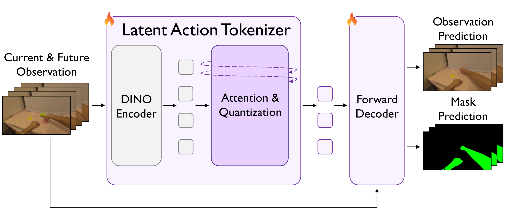
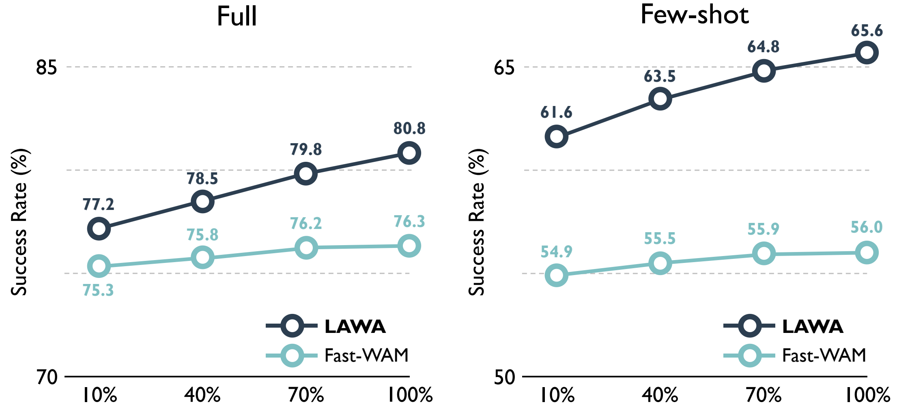
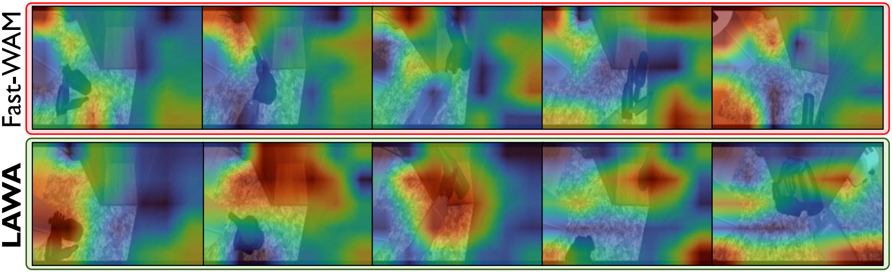
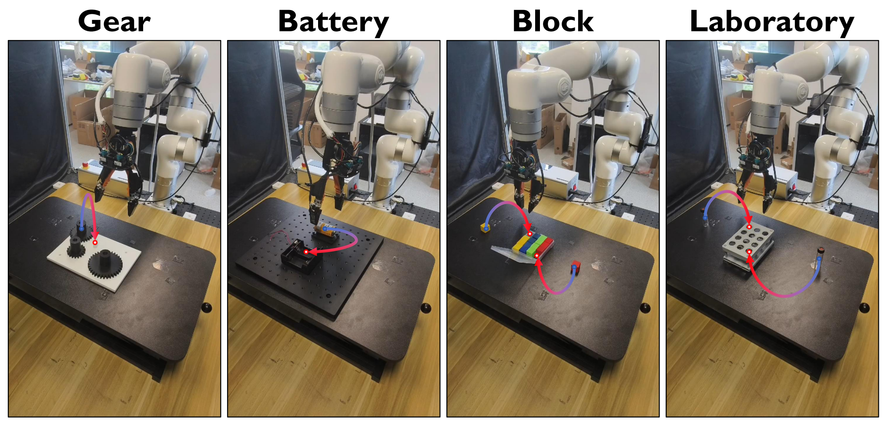

Fast-WAM
Removes future prediction at inference, reducing latency but weakening generalization in the matched comparisons.
current view→action
LAWA keeps the benefits of test-time future imagination while replacing expensivefuture-observation generation with compact, executable latent intentions.
1CollegeAI, THU2AIR, THU3CASIA4TARS Robotics5FDU6Southeast University7SJTU8NUS9BUAA

Abstract
World action models improve robot control by modeling how observations evolve, but generating future observations at test time incurs substantial latency. Matched implementations show lower generalization for Fast-WAM than future-aware alternatives, especially with scarce demonstrations and out-of-distribution scenarios.
LAWA uses compact latent actions as an operational representation of future intentions, enabling efficient test-time future imagination without generating future observations. A discrete tokenizer enhanced by action-free pre-training produces manipulation-centric codebook targets; LAWA jointly denoises a continuous latent state anchored to those targets with executable action chunks.
Across RoboCasa, LIBERO-Plus, and real-world tasks, LAWA improves performance over Fast-WAM while preserving the performance level of Joint-WAM at substantially lower inference latency.
The design space
Removes future prediction at inference, reducing latency but weakening generalization in the matched comparisons.
Explicitly imagines future observations and feeds them to the action expert, preserving a direct, observation-space representation of task progress. This future awareness comes at the cost of iterative visual generation during inference.
Predicts compact, temporally structured latent actions as intentions, then jointly denoises those intentions with action chunks.
Method
Training connects video, latent-action, and action experts. Inference removes the future-video branch and keeps only the compact intention pathway plus action prediction.

A discrete tokenizer compresses current-to-future visual changes into a sequence of latent actions.
LAWA denoises a continuous latent state anchored to manipulation-centric codebook targets.
The action expert attends to the latent intention and jointly denoises executable action chunks.

Action-free pre-training
Video reconstruction can favor static appearance over small interaction dynamics. LAWA adds automatically generated mask targets to bias the tokenizer toward hands, manipulators, and interaction regions.
Results
The comparisons answer complementary questions: Fast-WAM is the primary performance baseline,while Joint-WAM is the efficiency reference for explicit future generation.
Average success rate across 24 tabletop tasks.
| Method | Paradigm | Few-shot | Full data |
|---|---|---|---|
| GR00T N1.6 | VLA | — | 47.6 |
| StarVLA | VLA | — | 48.8 |
| StarVLA-α | VLA | — | 53.8 |
| TwinBrainVLA | VLA | — | 54.6 |
| ABot-M0 | VLA | — | 58.3 |
| RLDX-1 | VLA | — | 58.7 |
| JoyAI-RA | VLA | — | 63.2 |
| DIAL | VLA | 58.3 | 70.2 |
| Being-H0.7 | WAM | — | 49.2 |
| DiT4DiT | WAM | — | 50.8 |
| LDA-1B | WAM | — | 55.4 |
| Fast-WAM† | WAM | 56.0 | 76.3 |
| Joint-WAM† | WAM | 64.1 | 78.8 |
| LAWA (Ours) | WAM | 65.6 | 80.8 |
LAWA exceeds the matched Fast-WAM by 9.6 points in few-shot and 4.5 points with full data.
Micro-average success across seven perturbation types.
| Method | Language | Camera | Lighting | Motion | Noise | Texture | Layout | Total |
|---|---|---|---|---|---|---|---|---|
| OpenVLA | 0.8 | 3.5 | 23.0 | 8.1 | 34.8 | 15.2 | 28.5 | 15.6 |
| OpenVLA-OFT | 56.4 | 31.9 | 79.5 | 88.7 | 93.3 | 75.8 | 74.2 | 69.6 |
| UniVLA | 1.8 | 46.2 | 69.6 | 69.0 | 81.0 | 21.2 | 31.9 | 42.9 |
| WorldVLA | 0.1 | 27.9 | 41.6 | 43.7 | 17.1 | 10.9 | 38.0 | 25.0 |
| π0 | 13.8 | 6.0 | 58.8 | 85.0 | 81.4 | 79.0 | 68.9 | 53.6 |
| π0-FAST | 65.1 | 21.6 | 61.0 | 73.2 | 73.2 | 74.4 | 68.8 | 61.6 |
| Fast-WAM† | 24.9 | 50.7 | 76.9 | 89.2 | 62.3 | 58.0 | 67.7 | 60.0 |
| Joint-WAM† | 47.2 | 65.3 | 91.8 | 94.8 | 57.6 | 61.0 | 78.9 | 70.4 |
| LAWA (Ours) | 69.2 | 66.7 | 62.8 | 96.2 | 64.5 | 85.5 | 78.6 | 74.4 |
Milliseconds per action chunk on one NVIDIA A800 GPU.
LAWA is 42.9% faster than Joint-WAM at comparable success, while substantially outperforming the faster Fast-WAM.
RoboCasa full-data success under inference-time perturbations.
| Latent input | Success rate |
|---|---|
| Gaussian noise | 52.2 |
| Temporal shuffle | 56.4 |
| Unperturbed | 80.8 |

From 10% to 100% of the video corpus, LAWA gains 3.6 points in full-data and 4.0 points in few-shot training.

In the illustrative rollout, LAWA follows the manipulated object and task-relevant region rather than diffuse background appearance.
Real-world tasks
Four tasks test complementary requirements on a UFACTORY xArm7: Gear and Battery emphasize assembly precision; Block and Laboratory require multi-stage execution.

With only 25% of demonstrations—50 trajectories per task—LAWA reaches 40.0% average success, surpassing the 33.8% achieved by Fast-WAM with the full training set. In the full-data setting, LAWA improves by 45 points on both long-horizon tasks.
Robot rollouts
Each task includes two representative LAWA rollout recordings captured from different angles. Every video is encoded at 4× its original speed.
A fine-grained task requiring the robot to position the gear so its teeth mesh with the adjacent gear.
A fine-grained assembly task in which the battery must be aligned and pressed until fully seated in the slot.
A long-horizon task that requires multiple object transfers and sustained execution across stages.
A long-horizon sequence involving multiple containers and transfers across the workspace.
Citation
@article{li2026latent,
title={Latent action as intention enables efficient future imagination for world action models},
author={Li, Xiang and Zheng, Yupeng and Gu, Songen and Ma, Huailiang and Yu, Feng and Zheng, Yuhang and Nie, Xian and Yuan, Shanshuai and Zang, Yujie and Li, Weize and others},
journal={arXiv preprint arXiv:2608.24882},
year={2026}
}